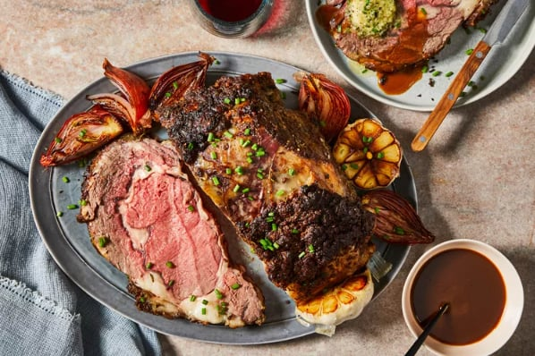
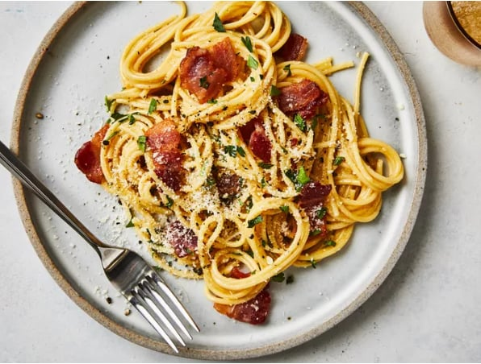
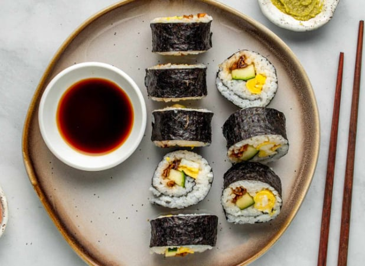
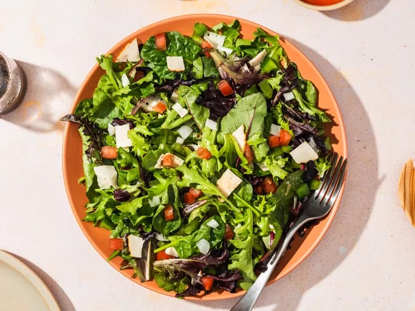
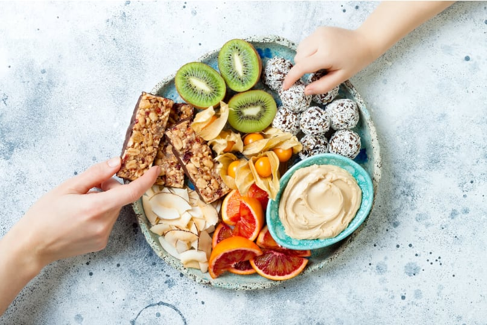

Classic Beef Steak
A juicy and flavorful beef steak cooked to perfection.
Preparation time
- Total: 20 minutes
- Preparation: 10 minutes
- Cooking: 10 minutes
Ingredients:
- 1 Beef steak (8 oz)
- Salt and pepper to taste
- 1 tbsp olive oil
- 1 tbsp butter
Instructions:
- Season the steak: Season the steak with salt and pepper on both sides.
- Heat the pan: Heat olive oil in a pan over medium-high heat.
- Cook the steak: Cook the steak for 4-5 minutes on each side, depending on thickness.

Spaghetti Carbonara
A classic Italian dish made with eggs, cheese, pancetta, and pepper.
Preparation time
- Total: 25 minutes
- Preparation: 10 minutes
- Cooking: 15 minutes
Ingredients:
- 200g spaghetti
- 100g pancetta
- 2 eggs
- 50g Pecorino Romano cheese
Instructions:
- Cook the pasta: Cook spaghetti according to package directions.
- Fry pancetta: Cook pancetta until crispy.
- Combine pasta with pancetta: Toss pasta with pancetta and egg mixture.

Sushi Rolls
Fresh sushi rolls with fish, rice, and vegetables.
Preparation time
- Total: 30 minutes
- Preparation: 15 minutes
- Cooking: 15 minutes
Ingredients:
- 2 cups sushi rice
- 4 sheets nori (seaweed)
- Fresh fish (salmon, tuna)
- Cucumber and avocado slices
Instructions:
- Cook the rice: Cook sushi rice and let it cool.
- Prepare fillings: Slice fish and vegetables.
- Roll the sushi: Place rice and fillings on nori, then roll tightly.

Healthy Green Salad
A fresh and healthy salad with greens, nuts, and vinaigrette dressing.
Ingredients:
- Mixed greens (lettuce, spinach, arugula)
- 1 avocado
- 1/4 cup almonds
- Olive oil and balsamic vinegar
Instructions:
- Prepare greens: Wash and chop mixed greens.
- Add toppings: Add sliced avocado and almonds.
- Dress the salad: Drizzle with olive oil and balsamic vinegar.

Healthy Snacks
Quick and healthy snacks like fruit, nuts, and yogurt.
Ingredients:
- 1 apple
- 1/4 cup almonds
- 1 cup plain yogurt
Instructions:
- Prepare the snack: Slice the apple and combine with almonds.
- Serve with yogurt: Serve with a side of yogurt for dipping.